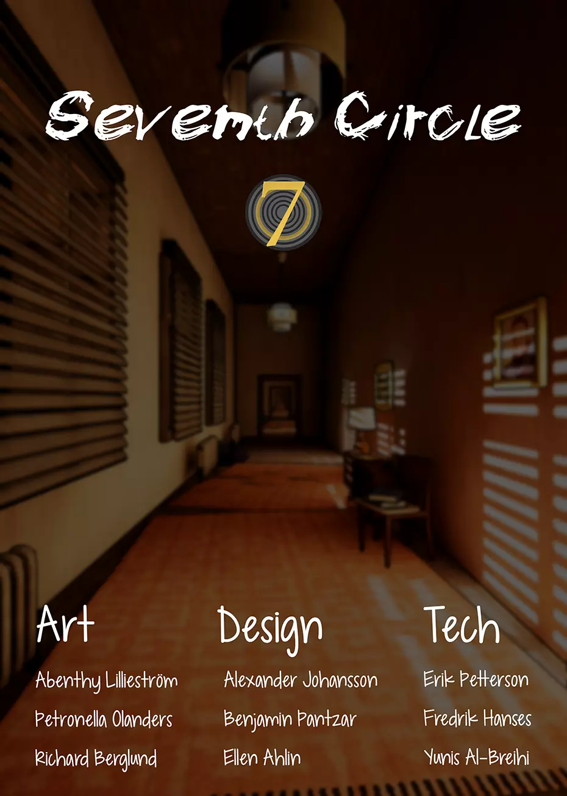

Game Info
In this first-person puzzle solver you play as Lars, stuck in his personal hell. Forced to relive his worst nightmare, until his scattered memories are collected.
Artificial Intelligence
Artificial Intelligence
Following Wall
We wanted to force the player to always move forward into the portals. The intimidating wall of smoke that is following the player sought to do just that.
Visual Flair
Visual Flair
Extra detail
I made a system for making objects float because we felt that the void surrounding the level was a bit too empty.